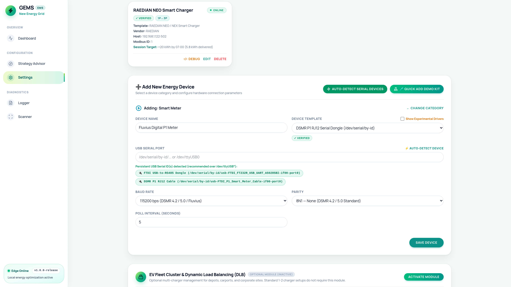
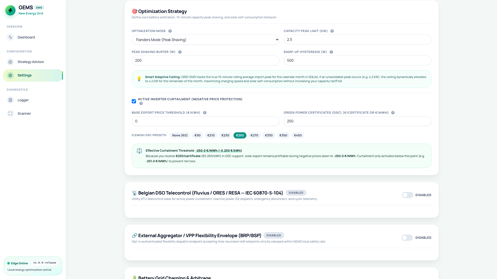
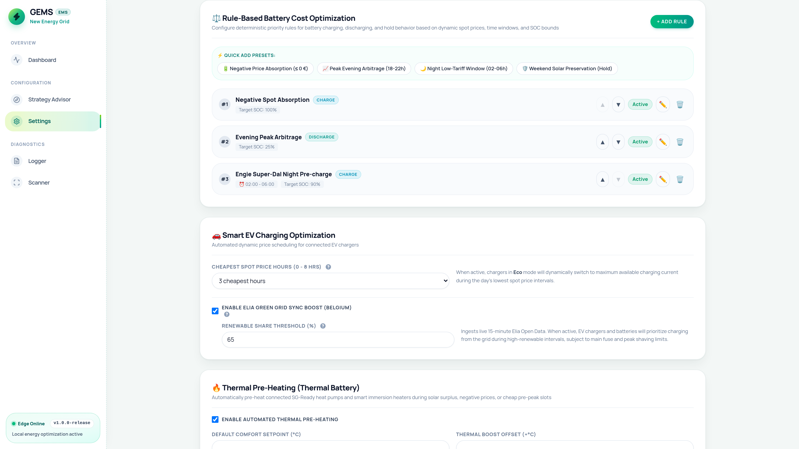
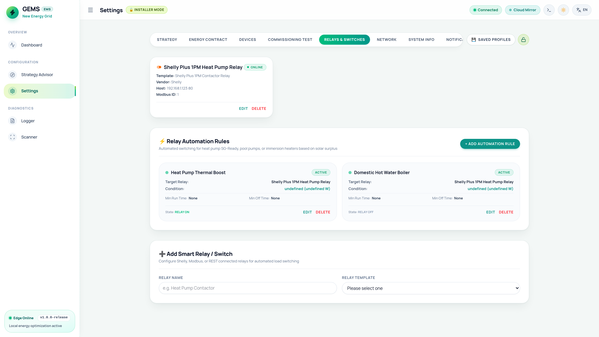
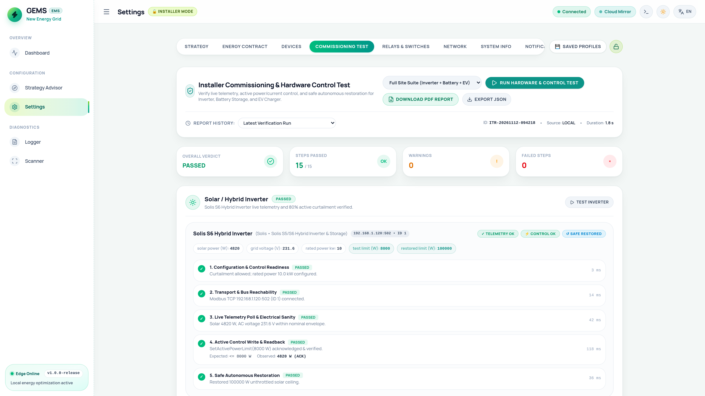

GEMS Installateurshandleiding

- 1. Hardware-architectuur & Stuklijst (BOM)
- 2. NVMe-bootloaderconfiguratie & EEPROM Flashen
- 3. OS-implementatie & Systeemservicebeheer
- 4. Toegang op afstand (Cockpit, Kiosk, VNC, Nginx)
- 5. Subnet- & Seriële Hardwaredetectie (De Scanner)
- 6. Toestellen Koppelen & De 170 Templates
- 7. Netaansluiting, Faselimieten & Netstelsels
- 8. Energiecontracten & De 5 Tariefwizards
- 9. Optimalisatiestrategie & Vlaamse Piekbewaking
- 10. Vlaamse Groenestroomcertificaten (GSC) Bescherming
- 11. Fluvius Telecontrole (IEC 60870-5-104)
- 12. Batterij-arbitrage & Prioriteitsregels
- 13. EV-laden: Modbus TCP vs. Native OCPP
- 14. Slimme Relais & Warmtepomp SG-Ready Sturing
- 15. Meldingen, Webhooks & Geautomatiseerde PDF-rapporten
- 16. Diagnose, Opleveringstest, Updates & Aftekening
1. Hardware-architectuur & Stuklijst (BOM)
GEMS is een autonome, lichtgewicht edge-controller ontwikkeld in Go (Golang) en Vue 3. Het systeem draait volledig op het lokale netwerk van de eindklant zonder enige verplichte cloud- of abonnementsafhankelijkheid. Om het klassieke faalpunt van slijtage aan MicroSD-kaarten in verdeelborden definitief uit te sluiten, draait GEMS uitsluitend vanaf een industriële M.2 NVMe SSD met SQLite geconfigureerd in Write-Ahead Logging (WAL)-modus.
Referentie-hardware Stuklijst (Bill of Materials)
| Onderdeel | Specificatie & Onderdeelreferentie | Praktijkadvies & Afwegingen bij Installatie |
|---|---|---|
| Host Single Board Computer | Raspberry Pi 5 (4GB of 8GB RAM, Broadcom BCM2712 Quad-core Cortex-A76) | Waarom Pi 5: Beschikt over een rechtstreekse 16-pins PCIe 2.0-interface. Het geheugengebruik blijft < 150 MB RAM bij 100 gelijktijdige Modbus-polls. 4GB is optimaal; 8GB biedt extra marge voor langdurige lokale meetreeksen. |
| Interne Solid State Drive | 128GB tot 512GB M.2 2280 of 2230/2242 PCIe NVMe SSD (TLC / 3D NAND) | Waarom NVMe: Levert 450+ MB/s sequentiële schrijfsnelheid en 50.000+ IOPS. Elimineert flash-slijtage bij hoogfrequente timeseries-databaseregistratie. Gebruik nooit MicroSD-kaarten voor productie-installaties. |
| M.2 PCIe HAT-adapter | Officiële Raspberry Pi M.2 HAT+ of Pimoroni NVMe Base | Wordt rechtstreeks bovenop de 40-pins GPIO-header of onder de Pi gemonteerd. Controleer dat de 16-pins FPC-lintkabel recht is geplaatst met de vergulde contacten gericht naar de printplaatcontacten. |
| Voedingseenheid (PSU) | Officiële Raspberry Pi 27W USB-C PD (5,1V / 5,0A Power Delivery) | Cruciaal: Standaard 15W-telefoonladers veroorzaken onderspanningsuitval (brownouts) zodra de NVMe-schijf piekstroom trekt tijdens schrijfacties. |
| Behuizing & DIN-railmontage | Aluminium Armor-behuizing met Active Cooler-ventilator + DIN-rail montageclip | Houdt de kerntemperatuur onder 48°C in gesloten elektrische verdeelkasten (conform AREI / NEN 1010). De Active Cooler-ventilatorsnelheid wordt dynamisch via PWM door de Linux-kernel aangestuurd. |
| Seriële Veldbusadapter | FTDI FT232R / FT232RL USB-naar-RS485 met 2,5 kV galvanische scheiding of P1-kabel | Vereist voor Modbus RTU (Eastron, Carlo Gavazzi, Solis, RAEDIAN) of rechtstreekse RJ12 P1-poortuitlezing. Galvanische scheiding voorkomt aardlussen tussen de omvormer en de Raspberry Pi. |
2. NVMe-bootloaderconfiguratie & EEPROM Flashen
Standaard worden Raspberry Pi 5-eenheden af fabriek geleverd met een opstartvolgorde die enkel vanaf MicroSD start (boot order 0xf41). Om rechtstreeks vanaf een M.2 NVMe SSD op te starten zonder geplaatste MicroSD-kaart, moet de Raspberry Pi EEPROM eenmalig worden bijgewerkt.
- Plaats een tijdelijke MicroSD-kaart in uw laptop.
- Open Raspberry Pi Imager → Kies toestel (Choose Device): Raspberry Pi 5.
- Kies besturingssysteem (Choose OS): Misc utility images → Bootloader → NVMe/PCIe Boot.
- Selecteer de MicroSD-kaart, klik op Write en plaats het kaartje in de Raspberry Pi 5.
- Schakel de spanning in met de officiële 27W-voeding. Binnen 5 seconden knippert de groene ACT-LED snel en kleurt het aangesloten HDMI-scherm effen groen.
- Koppel de voeding los en verwijder de MicroSD-kaart. De Pi 5 staat nu permanent ingesteld op
BOOT_ORDER=0xf461en start voortaan automatisch op vanaf de NVMe SSD!
PCIe Gen 3.0 Snelheden Inschakelen (Optionele Atelieroptimalisatie)
Standaard werkt de PCIe-bus van de Pi 5 op Gen 2.0-snelheid (500 MB/s). Om PCIe Gen 3.0 te activeren (tot 850 MB/s), bewerkt u /boot/firmware/config.txt en voegt u het volgende toe:
dtparam=pciex1
dtparam=pciex1_gen=3
3. OS-implementatie & Systeemservicebeheer
Installateurs kunnen GEMS uitrollen via twee goedgekeurde installatiemethoden:
Vergelijking van Implementatiemethoden
| Kenmerk | Methode A: Voorgebouwde GEMS OS-image (.img.xz) | Methode B: Debian-pakket (.deb) op Standaard OS |
|---|---|---|
| Aanbevolen voor | Nieuwe sleutel-op-de-deur hardware-installaties | Bestaande Debian- / Raspberry Pi OS-installaties |
| Kiosk-touchscreen | Voorgeconfigureerde Wayfire Wayland-browser op volledig scherm | Handmatige browserconfiguratie vereist |
| Reverse Proxy | Voorgeïnstalleerde Nginx (Poort 80/443 → 8080) met WebSockets | Standaard directe backend op poort 8080 |
| Webbeheer op afstand | Voorgeïnstalleerde Cockpit op poort 9090 | Optioneel te installeren via apt install cockpit |
| Installatieduur | ~3 minuten (directe SSD-flash) | ~5 minuten (pakketdownload en dpkg-installatie) |
Methode B: Installatiecommando's voor het Debian-pakket
TAG=$(curl -fsSL https://api.github.com/repos/webdotpulse/GRID-EMS-RELEASE/releases/latest | grep -o '"tag_name": *"[^"]*"' | cut -d'"' -f4)
curl -fLO "https://github.com/webdotpulse/GRID-EMS-RELEASE/releases/download/${TAG}/gems_${TAG#v}_arm64.deb"
# 2. Installeer pakket en afhankelijkheden (bijv. sudo dpkg -i gems_9.55.0_arm64.deb)
sudo dpkg -i "gems_${TAG#v}_arm64.deb"
sudo apt-get install -f -y
# 3. Controleer de actieve systemd-achtergrondservices
sudo systemctl status gems.service gems-updater.path
- Executable & Webbundel:
/opt/gems/gems-server&/opt/gems/dist/ - Configuratieopslag: 100% UI-gestuurd in SQLite (geen handmatige tekstbestanden nodig)
- SQLite WAL-database:
/opt/gems/gems.db(met bijbehorendgems.db-wal) - Systeemgebruiker: Draait onder niet-geprivilegieerde gebruiker
gemsmet toegang tot dedialout-groep voor seriële poorten.
4. Toegang op afstand, Cockpit & Kiosk-scherm
Zodra de controller in het verdeelbord is gemonteerd, zijn een fysiek toetsenbord of beeldscherm volledig overbodig. De technicus heeft via het netwerk toegang tot alle diagnostische en operationele hulpmiddelen:

| Toegangsinterface | URL / Eindpunt | Standaard Aanmeldgegevens | Primair Gebruiksdoel |
|---|---|---|---|
| GEMS Web-UI | https://ems.local (LAN) of http://ems.local (Kiosk) |
Geen login voor Dashboard & EV-modus; Installateurs-PIN voor Instellingen | Dagelijks energiedashboard, toestelconfiguratie, energiecontracten en strategieregels. |
| GRID-EMS-SERVER (Cloud) | https://ems.newenergygrid.com |
Koppelingstoken (Instellingen → Cloudserver) | Optioneel centraal vlootbeheer over meerdere locaties, diagnose op afstand en mobiele weergave. |
| Cockpit Webconsole | https://<IP-ADRES>:9090 |
Geprovisioneerd Linux-beheerdersaccount | Browserterminal, NVMe SMART-gezondheidsstatus, OS-diagnose en herstart (wijzig het initiële wachtwoord bij oplevering). |
| Raspberry Pi Connect | https://connect.raspberrypi.com |
Raspberry Pi ID van de installateur | Beveiligde supportverbinding op afstand zonder port-forwarding (onbeheerd schermdelen standaard uitgeschakeld). |
4.1 Optionele Cloudsynchronisatie (GRID-EMS-SERVER)
Installateurs kunnen klantcontrollers koppelen aan het centrale cloudplatform GRID-EMS-SERVER (https://ems.newenergygrid.com).
GEMS is ontworpen volgens een local-first architectuurgarantie. Cloudconnectiviteit is 100% optioneel: de eenheid werkt volledig autonoom en voert sub-seconde Dynamic Load Balancing (DLB), omvormer-terugregeling, batterij-arbitrage en relaissturing lokaal uit zonder enige cloudafhankelijkheid. Wanneer gekoppeld, biedt het versleuteld vloottoezicht en stuurcommando's op afstand zonder open routerpoorten.
- Snelle Koppeling: Ga naar Instellingen → Cloudserver, voer het 16-cijferige koppelingstoken in en klik op Nu koppelen & verbinden. De registratie is binnen 15 seconden voltooid.
- Uitsluitend Uitgaande TLS 1.3: Edge-controllers bouwen zelf uitgaande HTTPS-verbindingen op. Inkomende port-forwarding op de klantrouter, vaste publieke IP-adressen of DDNS zijn nooit vereist.
- Vlootsturing op Afstand: Beheerders kunnen op afstand strategiemodi aanpassen, batterijstatussen bijsturen, EV-laadstromen begrenzen en diagnostische controles starten.
4.2 Lokale CA-certificering & Waarschuwingsvrij HTTPS (localhost, ems.local & Eigen Domeinen)
Moderne browsers blokkeren standaard zelfondertekende certificaten met beveiligingswaarschuwingen (zoals NET::ERR_CERT_AUTHORITY_INVALID). Voor een naadloze, veilige gebruikers- en installateurservaring met groen slotje bevat GEMS een ingebouwde Lokale Certificate Authority (CA)-engine.
GEMS vult automatisch alle Subject Alternative Names (SAN's) in voor loopback-adressen (localhost, 127.0.0.1, ::1), standaard mDNS-hostnamen (ems.local, gems.local, *.ems.local, *.gems.local), actieve lokale netwerk-IP's én elk geconfigureerd lokaal domein (bijv. myems.lan). Bij toevoeging van eigen domeinen genereert GEMS het certificaat direct opnieuw en herlaadt dit live zonder onderbreking van de energiesturing.
| Taak | Methode / Eindpunt | Uitvoering & Toelichting |
|---|---|---|
| Root-CA Downloaden | http://<ip>:8080/api/ca.crt (of /ca.crt) |
Download het publieke Root-CA-certificaat rechtstreeks naar smartphone, tablet of laptop. |
| Geautomatiseerde Linux / NSS-setup | ./scripts/setup-local-ca.sh [eigen domeinen...] |
Automatiseert certificaataanmaak en registreert de CA in Chrome NSS (~/.pki/nssdb) en Firefox. |
| Eigen Domeinen via Web-UI | Instellingen → Systeeminformatie → Lokale CA & SSL-certificaat (Installateursmodus) | Ontgrendel de Gecertificeerde Installateursmodus, voer kommagescheiden domeinen in en klik op Opslaan & Certificaat Vernieuwen. |
5. Subnet- & Seriële Poort Hardwaredetectie (De Scanner)
In plaats van handmatig router-IP-adressen, USB-seriële paden, RS-485 baudrates of Modbus Slave ID's te moeten opzoeken, gebruikt u de ingebouwde Scanner in de hoofdnavigatiebalk (beschikbaar zodra de Gecertificeerde Installateursmodus is ontgrendeld).

Seriële Poort & RS-485 Busscanner
Klikken op "Seriële poorten scannen" controleert alle aangesloten USB-P1-kabels, USB-RS485-adapters (vaste /dev/serial/by-id/*-paden) en onboard UART-interfaces zonder reeds actieve toestelpollers te onderbreken:
- DSMR / e-MUCS P1 Slimme Meters: Luistert automatisch naar live digitale metertelegrammen op
115200 8N1en9600 7E1inclusief CRC-16 controlesomverificatie. - RS-485 Modbus RTU Energietoestellen: Detecteert automatisch aangesloten omvormers (bijv. Solis S5/S6 Hybrid), EV-laadpalen (bijv. RAEDIAN NEO / NEX) en DIN-rail energiemeters over gangbare baudrates en pariteitsinstellingen, met een optionele Geavanceerde RS-485 busscan voor aangepaste multi-drop Slave ID-bereiken (
1–247). - 1-Klik Seriële Koppeling: Klikken op "+ Configureren" naast een gedetecteerd serieel toestel opent Instellingen → Toestellen en vult automatisch de categorie, het geverifieerde hardwaretemplate, het vaste seriële poortpad, het Modbus Slave ID, de baudrate en de pariteit in. U kunt ook rechtstreeks in het toevoegvenster op "Seriële toestellen detecteren" of "Automatisch detecteren" klikken.
Lokale Subnet LAN-detectie
Wanneer u op "Subnet scannen" klikt, voert GEMS een meerfasige netwerkscan uit over het volledige lokale /24-subnet (254 hostadressen):
- Automatische GEMS-controller Zelfherkenning: GEMS herkent automatisch zijn eigen lokale IPv4- en hardware-MAC-adres op het netwerk en markeert deze rij met
THIS GEMS CONTROLLER(New Energy Grid — GEMS Edge Energy Controller). - Multicast- & Buurtabel-scan: Combineert lokale ARP-/buurtabellen met mDNS- en UPnP/SSDP-broadcasts om hostnamen en modelbeschrijvingen op te halen.
- Multi-Mask IEEE OUI-herkenning (24-, 28- en 36-bit): Vergelijkt hardware-MAC-adressen met zowel gespecialiseerde energieregisters als de volledige IEEE MA-L / MA-M / MA-S database (bijv. Solis, RAEDIAN, SMA, Shelly).
- Protocol- & OEM-fingerprinting: Bij toestellen met generieke ingebouwde Wi-Fi-/Ethernet-communicatiemodules inspecteert GEMS openstaande energiepoorten (
502/1502Modbus TCP & SunSpec Model 1 / Device ID,80/443/8080HTTP/TLS-eindpunten en8887OCPP) om de werkelijke fabrikant en het model te tonen, met strikt respect voor single-socket Modbus TCP-dongles.
6. Toestellen Koppelen & De 170 Hardwaretemplates
GEMS beschikt over een ingebouwde bibliotheek van 170 native hardwaretemplates voor alle gangbare Europese zonne-omvormers, thuisbatterijen, slimme meters, EV-laadpalen, lineaire zonneboilers/diverters, SG-Ready warmtepompen en slimme relais. Alle configuratie gebeurt 100% via de grafische webinterface zonder handmatige tekstbestanden.


Stapsgewijze Handleiding voor Toestelkoppeling
- Ga naar Instellingen → Toestellen.
- Klik op "+ Nieuw energietoestel toevoegen".
- Kies de gewenste toestelcategorie (Omvormers & Zon, Slimme Meters, EV-laadpalen of Slimme Relais).
- Selecteer het juiste hardwaretemplate uit de keuzelijst.
- Vul de communicatieparameters in volgens onderstaande tabellen.
- Klik op "Opslaan". De backend start onmiddellijk de uitlezing en wijzigt de status naar ● Online.
demo_meter, demo_solar, demo_battery, demo_charger, demo_relay) kunnen ook afzonderlijk per categorie worden geselecteerd.
Categorie A: Zonne- & Hybride Omvormers (Modbus TCP / RTU)

| Veldnaam | Veldtype | Uitleg voor Installateur & Wanneer Kiezen |
|---|---|---|
Toestelnaam |
Tekst | Herkenbare naam op het dashboard (bijv. "Solis S6-EH3P10K Hybrid"). |
Hardwaretemplate |
Keuzelijst |
Selecteer uw fabrikant (primaire referentietemplate: Solis 5G/S6 Hybrid; ondersteunt tevens Huawei, SMA, Enerlution, Fronius, SolarEdge, Sungrow, GoodWe, Victron of Generieke SunSpec). Badges tonen ✓ Geverifieerd, 1F↔3F of Enkel uitlezing.
|
Host-IP / Seriële Poort |
IPv4 of /dev/serial/by-id/* |
Lokaal IP-adres van de Ethernet-/LAN-dongle van de omvormer (bijv. 192.168.1.120) of het vaste USB-RS485 seriële pad (/dev/serial/by-id/* met baudrate 9600/115200 en pariteit 8N1). |
Modbus-poort |
Geheel getal | Standaard Modbus TCP-poort is 502 (of 1502 / 8899 op specifieke gateways). |
Modbus Slave ID |
Geheel getal (1–247) | Unit-ID op de RS-485/TCP-bus. Solis staat standaard op 1. Wijs unieke Slave ID's toe (1, 2, 3) wanneer meerdere toestellen in daisy-chain op één RS-485-bus zijn aangesloten. |
Nominaal Vermogen (kW) |
Decimaal (kW) |
Cruciaal: Voer het nominale AC-vermogen van de omvormer in (bijv. 10.0 voor een 10 kW Solis-omvormer). GEMS gebruikt deze waarde om procentuele stuurcommando's voor actieve terugregeling (curtailment) exact te schalen.
|
Fase-aansluiting |
Keuzelijst |
Koppelt de fysieke fasevolgorde: Auto, enkelfasig (L1, L2, L3) of driefasige faserotatie (L1-L2-L3, L2-L3-L1, L3-L1-L2) voor nauwkeurige per-fase hoofdzekeringbewaking.
|
Terugregeling toestaan |
Selectievakje | Wanneer aanvinken: Wanneer de klant een dynamisch energiecontract heeft en u wilt dat GEMS de PV-productie automatisch terugregelt tijdens negatieve terugleverprijzen of voor zero-export neteisen. |
Eigen Netmeter Aangesloten? |
Selectievakje | Wanneer aanvinken: Vink aan als de hybride omvormer een eigen CT-energiemeter rechtstreeks op de omvormer heeft aangesloten. Wanneer uitvinken: Als er geen eigen omvormermeter aanwezig is—GEMS stuurt het batterij-zelfverbruik dan automatisch aan op basis van de centrale digitale P1-meter! |
Batterij Aangesloten? & Capaciteit (kWh) |
Selectievakje + Decimaal |
Wanneer aanvinken: Vink aan wanneer een DC-gekoppelde thuisbatterij op de hybride omvormer is aangesloten en voer de bruikbare opslagcapaciteit in kWh in (bijv. 10.0 kWh) voor nauwkeurige zonneprognose- en laadberekeningen.
|
Uitleesinterval (s) |
Geheel getal (seconden) | Standaard 2 seconden voor snelle regeling zonder seriële of TCP-transceivers te overbelasten. |
Categorie B: Slimme Netmeters (P1 Serieel, Wi-Fi Bridges & Modbus)

| Type Meterverbinding | Ondersteunde Templates | Veldwaarden & Installatieopmerkingen |
|---|---|---|
| Directe Seriële P1-kabel | Fluvius / DSMR P1 Serieel (België & Nederland) |
Selecteer het vaste pad /dev/serial/by-id/... (of /dev/ttyUSB0). Baudrate: 115200 (DSMR 5.0.2 / e-MUCS v1.4) of 9600 (DSMR 4.2). GEMS valideert automatisch de CRC-controlesommen van elk P1-telegram.
|
| P1 Wi-Fi-dongle (REST/TCP) | HomeWizard P1 Meter, ESP8266/ESP32 P1 Bridge |
Voer het lokale IP-adres van de dongle in (bijv. 192.168.1.121). Poort 80 (REST API) of poort 8234 (raw TCP seriële stream). Geen fysieke bekabeling naar de Raspberry Pi vereist!
|
| Modbus RTU / TCP DIN-meters | Eastron SDM72D-M / SDM630 3-Fase, Carlo Gavazzi EM24, Schneider iEM3000, Shelly 3EM / Pro 3EM |
Modbus RTU: USB-naar-RS485-adapter op 9600 baud, 8N1, Slave ID 1. Modbus TCP: Voer het bridge-IP en poort 502 in. Shelly Pro 3EM: Voer het toestel-IP en poort 80 in.
|
| PV-productiesubmeters (Niet-communicerende Zonne-omvormers) | Eastron SDM72D-M (eastron_sdm72_x96), Eastron SDM630 / SDM120 / SDM230, Carlo Gavazzi EM24, Shelly Pro 3EM |
Plaats de DIN-railmeter op de AC-uitgangsautomaat van een oudere zonne-omvormer zonder eigen Modbus/LAN-poort. Voeg toe onder Omvormer / Zon → PV-productiemeters (of zet Meetrol van Energiemeter op Zonne- / PV-productiemeter). Geef een uniek RS-485 Slave ID (bijv. ID 2) op een gedeelde bus; klemrichting en nachtelijk sluipverbruik worden automatisch herkend.
|
Categorie C: EV-laadpalen (Modbus TCP vs. Native OCPP)

Naadloze split-billing met werkgever: Laat de bestaande cloud-OCPP-verbinding van de laadpaal (externe CPO-facturatieplatformen of terugbetalingsdiensten van werkgevers) volledig intact. Beide werken gelijktijdig!
Let op bij RAEDIAN Gemini: Schakel Load management with EMS in via de lokale Gemini WebConfig om Modbus TCP-stroomregeling op poort
502 te activeren (anders blijft Gemini in alleen-lezen HTTPS-telemetriemodus).
ws://<GEMS-IP>:8887/<ID> (of ws://ems.local/ocpp/<ID>).
| EV-laadpaal & Vloot-DLB Instelling | Opties / Standaard | Uitleg voor Installateur & Wanneer Configureren |
|---|---|---|
Laadpuntnummer & Vlootprioriteit |
Laadpunt 1–64 • VIP, Hoog, Normaal, Laag, Enkel Zon |
Wijst het fysieke parkeervak en de strikte Priority Queue-rangorde toe (VIP > Hoog > Normaal > Laag > Enkel Zon): Laag maakt bij stroomtekort plaats voor Normale laadpunten maar behoudt toegang tot net- en dalstroom, terwijl Enkel Zon pauzeert zodra er geen zonne-overschot beschikbaar is. |
Automatische 1F/3F Fase-omschakeling |
Selectievakje (Uit / Aan) |
Activeert automatische omschakeling tussen 1-Fase (1,4–3,6 kW) en 3-Fasen (4,1–22 kW) op geschikte laadpalen (zoals RAEDIAN NEO) met een verplichte stroomloze contactorpauze van 20 seconden om het vastlassen van voertuigrelais te voorkomen. |
Vloot-DLB Actief & Zero-Touch Auto Onboard |
Schakelaars (Onderaan tabblad Toestellen) | Activeert Dynamic Load Balancing over meerdere laadpalen (tot 64 laadpunten) en registreert binnenkomende OCPP 1.6-J laadpalen automatisch bij hun eerste BootNotification. |
Cluster Max. Stroom (A) & Verdelingsmodus |
bijv. 63 A • priority_queue, equal_share, solar_first |
Bepaalt de maximale groepszekering van het laadplein en kiest hoe de beschikbare laadruimte over actieve voertuigen wordt verdeeld. |
Straight-Through OCPP Smart Forwarder |
Upstream CPO URL + Auth Header |
Stuurt OCPP-verrekenings- en RFID-verkeer transparant door naar een extern CPO-facturatieplatform (ondersteunt de URL-variabele {chargePointId}) terwijl GEMS lokaal SetChargingProfile-stroomlimieten injecteert. |
7. Netaansluiting, Meerfasige Configuratie & Netstelsels
Ga naar Instellingen → Strategie → Elektrische Netaansluiting & Limieten. Een correcte instelling van de fysieke hoofdzekering (conform AREI in België of NEN 1010 in Nederland) voorkomt het uitvallen van de hoofdautomaat en vormt de basis voor Dynamic Load Balancing.

| Parameternaam | Standaard / Bereik | Technische Toelichting & Wanneer Selecteren |
|---|---|---|
Tijdzone, Breedte- & Lengtegraad |
Europe/Brussels + Adresopzoeking |
Voer het installatieadres in en klik op Lookup Lat/Lon. Wordt gebruikt door de Open-Meteo zonne-instralingsvoorspeller om de verwachte PV-opbrengst van morgen (W/m²) te berekenen voor nachtelijke batterij-arbitrage. |
Elektrisch Netstelsel |
Keuzelijst |
Enkelfasig 230V (1x230V + N): Standaard monofasige huisaansluiting (Fase + Nulgeleider, 230V AC). Driefasig 400V (+N): Standaard Europees 3-fasen TN/TT-stelsel (3x 400V lijnspanning, 230V fasespanning). Driefasig 230V Delta (3x230V zonder N): Klassiek Belgisch driehoeksnet (Brussel en delen van Vlaanderen & Wallonië). 3x 230V tussen de fasen zonder nulgeleider (past √3 lijn-tot-lijn vermogensberekening toe). |
Nominale Stroom / Hoofdzekering (A) |
25,0 A (16A – 250A) |
De nominale uitschakelstroom van de hoofdautomaat in de tellerkast (bijv. 25A, 32A, 40A, 63A). GEMS berekent hiermee het maximale toelaatbare aansluitvermogen.
|
Faselimiet (A) |
25,0 A (16A – 250A) | Het harde veiligheidsplafond per afzonderlijke fase. Zodra asymmetrische huishoudelijke verbruikers (bijv. een inductiekookplaat op fase L1) de stroom op L1 richting deze limiet duwen, knijpt GEMS onmiddellijk de EV-laadstroom om uitschakeling van de hoofdzekering te vermijden! |
Toegestane Netafname (kW) |
Auto (of handmatig kW) |
Maximaal continu vermogen dat uit het distributienet mag worden afgenomen. Op een 3x400V 25A-aansluiting bedraagt dit standaard 17,2 kW.
|
Toegestane Netinjectie (kW) |
Auto (of handmatig kW) |
Maximaal continu vermogen dat in het distributienet mag worden geïnjecteerd. Stel in op 0,0 kW voor strikte zero-export conformiteit (de omvormer wordt dynamisch teruggeregeld tot exact het actuele woningverbruik).
|
Terugvalstroom bij Meteruitval |
0 A (Pauze), 6 A, 8 A, 10 A, 16 A |
Veilige noodstroomlimiet voor EV-laadpalen wanneer de P1- of Modbus-netmeting langer dan 30 seconden wegvalt. Kies 0 A (Pauze — Aanbevolen) bij krappe hoofdzekeringen of 6 A om minimale druppellading toe te staan.
|
8. Energiecontracten & De 5 Tariefwizards
Onder Instellingen → Energiecontract modelleert GEMS het stroomcontract van de klant om netto afnamekosten, injectievergoedingen en optimale laadvensters voor de thuisbatterij te berekenen. GEMS haalt dagelijks om 13:00 CET de uurlijkse EPEX Spot Day-Ahead marktprijzen op.


De 5 Contractwizards: Wanneer Welke Kiezen?
| Wizard | Doeltype Contract | Ondersteunde Presets & Parameters | Wanneer Selecteren |
|---|---|---|---|
| Wizard A: Vast / Variabel |
Klassieke energiecontracten met vaste of maandelijks variabele tarieven |
- Piektarief Afname (€/kWh) - Daltarief Afname (€/kWh) - Vaste Terugleververgoeding (€/kWh) - Optionele NL Post-2027 fixed_feed_in_cost_kwh & ≥ 50% minimumcontrole
|
Kies wanneer de klant geen dynamisch tarief heeft. Ondersteunt Nederlandse post-saldering terugleverkosten en Waalse CWaPE Tarif Impact DNB-schema's.
|
| Wizard B: Geavanceerd Dynamisch |
Maatwerk dynamische contracten met visuele formulebouwer |
- Gekoppelde EPEX Spot-veilingfeed - Drag-and-drop formuleblokken ( Spot, Opslag, Factor, Nettarief, BTW)- Tijdvenster- en weekdag-uitzonderingen |
Kies voor niet-voorgedefinieerde internationale leveranciers of zakelijke maatwerkcontracten met specifieke prijsformules. |
| Wizard C: Dynamic-BE |
Belgische 15m / 60m EPEX Spot Day-Ahead contracten |
Voorgeprogrammeerde leveranciers: TotalEnergies Pixel Dynamic, Mega Smart/Cosy, Bolt Dynamisch, Engie Dynamic, Dats 24, Luminus, Eneco, Frank Energie, Ecopower, Octa+, Trevion, Aspiravi. Inclusief 15m/60m-spotafrekening, Belgische federale accijns 2027 (0,0392 €/kWh) en Waals CWaPE Tarif Impact (ECO/MEDIUM/PIC).
|
Standaardkeuze voor dynamische contracten in België. Selecteer klantsegment (Particulier 6% BTW vs. Zakelijk 21% BTW), gewest en afsluitdatum. |
| Wizard D: Flex-BE |
Belgische maandelijks variabele contracten met Time-of-Use tariefschijven |
- Engie Flextime maandelijks EPEX-gemiddelde - Piek-, Dal- en Super-Dal (01:00–07:00) opslagen - Geautomatiseerd nachtelijk batterijladen |
Kies wanneer de klant een Engie Flextime-contract heeft. Activeert automatisch voorladen van de batterij tijdens de sterk verlaagde Super-Dal nachturen. |
| Wizard E: Dynamic-NL |
Nederlandse dynamische 15m / 60m contracten met wettelijke energiebelastingen |
Voorgeprogrammeerde NL-leveranciers: Vattenfall Nederland — FlexPrijs (1,00× EPEX NL + 0,0211 €/kWh inkoopvergoeding + 95,40 €/jr Vastrecht), Eneco Dynamisch, Frank Energie Dynamisch en vrije Nederlandse EPEX Day-Ahead contracten.Inclusief wettelijke Energiebelasting excl. btw (2026: 0,09161 €/kWh / 2027: 0,08802 €/kWh), 21% BTW, 15m/60m-afrekening en Terugleverkosten.
|
Standaardkeuze voor installaties in Nederland. Verrekent nauwkeurig de excl.-BTW Energiebelasting, Nederlandse terugleverkosten en strikte NL-landisolatie. |
9. Optimalisatiestrategie & Vlaamse Piekbewaking (Capaciteitstarief)
Ga naar Instellingen → Strategie om de centrale optimalisatie-engine in te stellen.

De Drie Kernstrategiemodi
Slaat 100% van het zonne-overschot op in de thuisbatterij en elektrische wagen. Minimaliseert netafname zonder een kW-piekplafond op te leggen.
Bewaakt het voortschrijdende kwartiergemiddelde voor het Fluvius Capaciteitstarief (standaard 2,50 kW). Ontlaadt de batterij en knijpt EV-laadstromen zodra huishoudtoestellen de ingestelde kwartierpiek dreigen te overschrijden.
Bewaakt per fase de
3×25A hoofdzekering via Dynamic Load Balancing (bespaart €1.000+/jaar aan verzwaringskosten naar 3×35A vastrecht), geeft voorrang aan lokale PV-opslag/EV-laden tegen terugleverkosten, regelt terug bij negatieve EPEX NL-uren en verbergt automatisch alle Vlaamse Capaciteitstarief-, GSC-, Elia-, Super-Dal- en IEC-104-functies.
Parameters Vlaams Capaciteitstarief (Fluvius)
| Parameter | Aanbevolen Waarde | Uitleg voor Installateur & Werking |
|---|---|---|
capacity_peak_limit_kw |
2,50 kW | Het maandelijkse basispiekplafond. In Vlaanderen rekent Fluvius altijd een wettelijke minimumbijdrage van 2,50 kW aan, ongeacht een lager verbruik. Door de kwartierpiek op of onder 2,50 kW te houden, betaalt de klant het laagst mogelijke distributietarief. |
peak_shaving_buffer_w |
200 W | Proactieve veiligheidsmarge die van het piekplafond wordt afgetrokken (bijv. 2,50 kW − 200 W = 2,30 kW drempel). Hierdoor begint GEMS al met het terugregelen van de laadpaal en het bijleveren uit de batterij voordat het 15-minutengemiddelde van de digitale meter wordt overschreden. |
peak_shaving_rampup_w |
150 W | Hysterese-drempel (vermogensdaling onder het plafond) voordat geknepen EV-laadpalen weer mogen opschalen. Voorkomt onrustig pendelen van voertuigcontactoren. |
| Slim Adaptief Piekplafond | Automatisch (Ingeschakeld) | Als er toch een onvermijdelijke huishoudpiek optreedt (bijv. oven + warmtepomp halen samen gedurende een kwartier 4,2 kW bij lege batterij), verhoogt GEMS zijn actieve stuurplafond automatisch naar 4,2 kW voor de rest van die kalendermaand. Omdat Fluvius deze 4,2 kW die maand sowieso aanrekent, laat GEMS de wagen sneller laden voor maximaal comfort zonder één eurocent extra netkosten! Op de 1e van de volgende maand reset het plafond automatisch terug naar 2,50 kW. |
10. Actieve Omvormer-terugregeling & Vlaamse GSC-bescherming
Bij dynamische energiecontracten duiken Europese groothandelsprijzen op zonnige weekendmiddagen regelmatig onder nul. Stroom injecteren tijdens negatieve prijsuren kost dan geld. Bestaande Vlaamse PV-installaties ontvangen echter vaak nog gegarandeerde Groenestroomcertificaten (GSC) per geproduceerde MWh.
Eenvoudige energiemanagers schakelen de omvormer al uit zodra de terugleverprijs onder €0,00/kWh zakt. Ontvangt een klant echter €250/certificaat (€0,250/kWh) aan Vlaamse groenestroomcertificaten, dan betekent afschakelen bij een marktprijs van −€0,05/kWh dat de klant netto +€0,20/kWh aan gegarandeerde opbrengst misloopt!
De Wiskundige GSC-terugregelformule
Voorbeeld (€250 GSC):
Effectieve Drempel = €0,00 - (€250,0 / 1000,0) = -0,250 €/kWh (-250,0 €/MWh)
| Vlaamse GSC-preset | Subsidiewaarde per kWh | Effectieve Terugregeldrempel | Actie voor Installateur |
|---|---|---|---|
| Geen GSC (€0) | €0,000 / kWh | ≤ 0,0 €/MWh (0,000 €/kWh) | Selecteer voor installaties na 2021 zonder GSC-rechten. Regelt direct terug zodra de injectieprijs onder nul zakt (en batterij/EV vol zijn). |
| €90 GSC | €0,090 / kWh | ≤ -90,0 €/MWh (-0,090 €/kWh) | Omvormer blijft doorproduceren bij licht negatieve prijzen tot −€0,090/kWh. Pas onder −€0,090/kWh wordt teruggeregeld. |
| €250 GSC | €0,250 / kWh | ≤ -250,0 €/MWh (-0,250 €/kWh) | Beschermt bestaande Vlaamse PV-installaties (2009–2012). Volledige opwekking blijft behouden tijdens vrijwel alle negatieve uren! |
| €350 GSC | €0,350 / kWh | ≤ -350,0 €/MWh (-0,350 €/kWh) | Beschermt oudere installaties met hoge certificaatwaarde. Productie blijft actief tot −350 €/MWh. |
| €450 GSC | €0,450 / kWh | ≤ -450,0 €/MWh (-0,450 €/kWh) | Beschermt vroege Vlaamse PV-installaties (2006–2008). Maximale certificaatopbrengst gegarandeerd. |
11. Belgische DNB Telecontrole (Fluvius / ORES / RESA — IEC 60870-5-104)
Voor commerciële, industriële en grotere decentrale productie-installaties die moeten voldoen aan de technische netvoorschriften (Synergrid C10/11 bij Fluvius, ORES en RESA), bevat GEMS een ingebouwde IEC 60870-5-104 slave-server met ondersteuning voor zowel ongetimede als CP56Time2a-tijdgelabelde commando's (ASDU 45/48/49/50 & 58/61/62/63), Select-Before-Execute, deactivatie (COT 8), proportionele multi-omvormer actief-vermogenscurtailment, gesloten-lus reactief-vermogenssturing (Q), cyclische/spontane P/Q/U-telemetrie met QDS-kwaliteitsvlaggen en verliesvrije live herconfiguratie.
Configuratieparameters voor Telecontrole
| Parameter | Standaardwaarde | Technische Omschrijving |
|---|---|---|
iec104_enabled |
Uitgeschakeld | Hoofdschakelaar voor de ingebouwde IEC 60870-5-104 telecontrole-serverdaemon (uitsluitend voor Belgische installaties). |
iec104_port |
2404 |
Standaard TCP-communicatiepoort volgens het IEC 60870-5-104-protocol. |
iec104_common_address |
1 |
ASDU Common Address (1–65534; stationsadres toegekend door Fluvius, ORES of RESA). |
iec104_allowed_ip |
0.0.0.0 |
IP/CIDR-allowlist voor hardwarebeveiliging. Vul het vaste IP-adres of subnet van de DNB RTU-kast in om ongeautoriseerde verbindingen te weigeren. |
iec104_curtailment_mode |
kw |
Eenheid van binnenkomende actieve en reactieve stuursetpoints: Absoluut vermogen (kw / kVAr) of Percentage van nominaal vermogen (percent). |
iec104_ioa_* |
5001–5003 / 1001–1003 |
Aangepaste 24-bits IOA-signaaltoewijzing voor Actief Setpoint (5001), Noodstop (5002), Reactief Setpoint Q (5003) en live P/Q/U-telemetrie (1001/1002/1003). |
Simulatieknoppen voor Opleveringskeuring op Locatie
Installateurs kunnen de noodafschakeling, actieve terugregeling en reactieve vermogenssturing rechtstreeks in de GEMS-webinterface verifiëren zonder te hoeven wachten op externe testsignalen van de netbeheerder:
- 🚨 Noodstop (ASDU 45): Simuleert een direct ontkoppelingscommando. GEMS stuurt onmiddellijk een 0 W-setpoint naar alle PV-omvormers en stopt batterijladen/-ontladen.
- ✓ Reset Noodstop: Herstelt de normale bedrijfstoestand na afloop van de afschakeltest.
- 📉 Limiet 4.0 kW (ASDU 50): Injecteert een actief vermogensplafond van 4,0 kW dat proportioneel naar nominaal vermogen over meerdere PV-omvormers wordt verdeeld én geforceerde batterij-export begrenst.
- ⚡ Zet +2.0 kVAr Q (ASDU 50): Stuurt een reactief vermogenssetpoint van +2,0 kVAr proportioneel naar Q-geschikte omvormers (Solis, Huawei, Sungrow, SMA, Fronius, SolarEdge, KOSTAL, ABB/FIMER, Delta, KACO en Custom Modbus).
- Vrijgave Alle Setpoints: Geeft het volledige actieve en reactieve vermogen opnieuw vrij.
Externe Aggregator / VPP Flexibiliteits-enveloppe (BRP/BSP)
Voor installaties aangesloten bij een erkende externe BRP/BSP-flexibiliteitsaggregator kan onder Instellingen → Strategie de opt-in Externe Aggregator / VPP Flexibiliteits-enveloppe worden ingeschakeld. Externe ±kW laad-, ontlaad- en hold-setpoints (beveiligd met een Bearer-token via lokaal POST /api/vpp/dispatch of de GRID-EMS-SERVER cloud-relay met verplichte 15–900s deadman-leases) worden altijd strikt begrensd binnen de lokale GEMS-veiligheidsrails: hoofdzekering per fase, DNB IEC 60870-5-104 / §14a EnWG voorrang, beschermde vpp_reserve_soc_pct & vpp_max_soc_pct grenzen, EV-vertrekdoel prioriteit, 0 W meter-uitvalbeveiliging en (in Vlaanderen standaard actief) het 15-minuten Capaciteitstarief-piekschild.
12. Batterij-arbitrage & Regelgebaseerde Kostenoptimalisatie
GEMS ondersteunt automatische spotprijs-arbitrage én deterministische prioriteitsregels onder Instellingen → Strategie → Regelgebaseerde Batterij-kostenoptimalisatie.

Arbitrageparameters & Slijtagebescherming van Batterijcellen
| Instelling | Standaard / Bereik | Toelichting voor Installateur & Praktijkafwegingen |
|---|---|---|
battery_grid_charge_strategy |
dynamic_forecast |
Dynamische 24u-voorspelling: Combineert de zonneprognose (Open-Meteo), het adaptieve woningverbruik en effectieve kwartier-/uurprijzen om batterijcapaciteit te reserveren voor dure avondpieken, gratis zonne-overschot voorrang te geven boven betaalde netafname en uitsluitend het lokale verbruik te dekken zonder geforceerde netinjectie. Enkel Prijsdrempel: Laadt vanuit het net zodra de prijs ≤ het ingestelde prijsplafond ligt. Enkel Super-Dal: Laadt uitsluitend tussen 01:00 en 07:00 uur. Hybride: Combineert de zonneprognose met dynamische spotprijsdrempels. |
force_charge_below_euro |
0,00 €/kWh (bijv. 0,08) |
Prijsplafond waaronder de batterij actief vanuit het net wordt opgeladen (standaard 0,00 €/kWh laadt enkel bij negatieve prijzen uit het net). |
force_discharge_above_euro |
999,0 €/kWh (Uitgeschakeld) |
Expliciete prijspiekdrempel waarboven de batterij actief naar het net injecteert. Laat op 999 staan zodat de batterij uitsluitend het eigen verbruik dekt zonder geforceerde teruglevering. |
min_battery_socmax_battery_soc |
Min: 10% (0–80%)Max: 100% (50–100%) |
Instelbare SoC-grenzen (min_battery_soc < max_battery_soc). Ontladen stopt bij de ondergrens min_battery_soc om reserve te bewaren, terwijl laden stopt bij het laadplafond max_battery_soc om celveroudering aan de bovenkant te beperken. |
solar_forecast_enabled |
Ingeschakeld (true) |
Schakelt de 24-uurs Open-Meteo zonneprognose (inclusief dubbele dakoriëntatie) en ochtend-zonneruimte (solar_hold) vóór middaguren met negatieve stroomprijzen in of uit. |
battery_wear_cost_eur |
0,040 €/kWh (3–6 ct) | Essentiële Slijtagebewaking: Elke laadcyclus belast de lithiumcellen. GEMS voert enkel netarbitrage uit wanneer het prijsverschil (Ontlaadprijs − Laadprijs) groter is dan deze ingestelde slijtagekost, zodat onrendabele micro-cycli worden vermeden! |
winter_fallback_enabledwinter_fallback_trigger_socwinter_fallback_target_socwinter_fallback_cheapest_hours |
Ingeschakeld Trigger: 25%Doel: 65%Venster: 2 uur |
Winter / Weinig-Zon Terugvallading: Voorkomt dat de thuisbatterij tijdens bewolkte winterweken werkloos op minimale SoC blijft staan wanneer dagelijkse prijsspreads kleiner zijn dan de volledige arbitragedrempel. Zodra SoC ≤ 25% en de 24-uurs zonneprognose (of gemeten 24-uurs PV-opbrengst) onvoldoende is om bij te laden, laadt GEMS de batterij tijdens de 2 goedkoopste uren van het etmaal op tot 65% SoC—met strikte bewaking van het Vlaamse kwartierpiekplafond en de hoofdzekering.
|
13. EV-laadsturing & Belgische Elia Groene Stroom Boost
GEMS stuurt gekoppelde EV-laadpalen rechtstreeks aan om de laadstroom elke seconde dynamisch te optimaliseren:
| Laadmodus | Stroombereik | Werking & Aanbevolen Toepassing |
|---|---|---|
| ECO / Enkel Zon | 6A tot 16A / 32A (Dynamisch) | Laadt uitsluitend met overtollige zonne-energie. Bij bewolking wordt de laadstroom automatisch verlaagd of gepauzeerd om dure netafname te vermijden. (Opmerking: 6A is de minimale genormeerde EV-laadstroom volgens IEC 61851: 1,4 kW enkelfasig of 4,1 kW driefasig). |
| FAST / Direct Laden | 16A of 32A (Vast Max.) | Benut gelijktijdig zon, batterij en netstroom tot tegen de ingestelde faselimiet van de hoofdzekering. Ideaal bij onmiddellijk vertrek. |
| Slim Dynamisch | Dynamisch (Spotprijs-gestuurd) | Plant de laadsessie automatisch in tijdens het ingestelde aantal Goedkoopste Spotprijs-uren (1 tot 8 uur) van het Day-Ahead contract. |
Belgische Elia Groene Stroom Synchronisatie-boost
Wanneer ingeschakeld onder Instellingen → Strategie, leest GEMS elke 15 minuten de actuele nationale hernieuwbare energiemix uit van de Belgische hoogspanningsnetbeheerder Elia. Zodra het aandeel Belgische wind- en zonne-energie de ingestelde drempel overschrijdt (bijv. 65%), krijgen het laden van de wagen en de thuisbatterij automatisch een boost—zodat lokaal verbruik maximaal samenvalt met echte Belgische groene stroom!
14. Slimme Relais & Warmtepomp SG-Ready Automatisering
GEMS integreert slimme relais (zoals Shelly Pro 2 of Shelly Plus 1PM) om sanitaire warmwaterboilers, zwembadpompen en SG-Ready warmtepompen automatisch aan te sturen.


| Triggervoorwaarde | Drempelinstelling | Hysterese & Schakeltijden | Typische Elektrische Toepassing |
|---|---|---|---|
excess_solar |
Overschot > 1.200 W |
Minimaal AAN: 10 min Minimaal UIT: 5 min |
SG-Ready warmtepomp thermische boost. Verhoogt de buffertank- en boilertemperatuur met gratis zonne-energie overdag. |
negative_spot_price |
Prijs ≤ 0,02 €/kWh |
Minimaal AAN: 15 min | Elektrische weerstandsverwarming in een sanitaire warmwaterboiler. |
time_window |
Dagelijks 13:00 tot 16:00 | Vast tijdschema | Zwembadfilterpomp ingepland tijdens de zonnigste middaguren. |
Stel voor warmtepompen altijd een Minimale Inschakeltijd (Minimum ON Time) van ten minste 10 minuten in. Kortcyclisch pendelen (het snel achter elkaar in- en uitschakelen van de compressor bij voorbijtrekkende wolken) kan ernstige motorschade veroorzaken en de fabrieksgarantie doen vervallen!
15. Meldingen, Webhooks & Geautomatiseerde PDF-rapporten
Configureer proactieve externe meldingen onder Instellingen → Meldingen:

- Webhook-meldingen: Plak een webhook-URL van Discord, Slack, Microsoft Teams of Ntfy. GEMS verstuurt onmiddellijk waarschuwingen bij aanhoudende communicatiefouten, naderende hoofdzekeringslimieten of uitval van de slimme meter.
- Wekelijks Energierapport per E-mail: Vul het e-mailadres van de bewoner en de SMTP-gegevens in. Elke zondag om 20:00 uur genereert en mailt GEMS automatisch een verzorgd PDF-overzicht met zonne-opbrengst, zelfvoorzieningsgraad (%) en gemeten maandpiek.
16. Inbedrijfstellingswizard, Installateurs-PIN, Netwerk-terugvalbeveiliging, Ondertekende Updates & Oplevering
Commerciële GEMS-controllers beschikken over uitgebreide opleverings- en veiligheidsfuncties onder de Installateursmodus (te ontgrendelen via het hangsloticoon rechtsboven in Instellingen):
- Begeleide Inbedrijfstellingswizard & Scheiding Bewonersmodus vs. Gecertificeerde Installateursmodus: Start automatisch bij de eerste opstart en doorloopt taalkeuze/locatie (
NL,FR,EN), aanmaak van de lokale Installateurs-PIN/wachtwoord, hoofdzekering & netstelsel (AREI / NEN 1010), slimme meterdetectie, koppeling van referentiehardware (Solis & RAEDIAN) en energiecontractselectie. In de dagelijkse Normale Bewonersmodus (vergrendeld) ziet de klant een overzichtelijke, veilige interface—live Dashboard-energiestromen, dagelijkse EV-laadkeuze, Toestellen (met live Debug-diagnose en 1-klik rapportverzending naar GRID-EMS-SERVER), Systeeminformatie (met Software-update en bevestigde Systeem herstarten) en het live Logboek—terwijl de Netwerkscanner, Cockpit-terminal (:9090), de tabbladen Strategie/Energiecontract/Relais/Netwerk/Meldingen/Cloudserver, het toevoegen/bewerken/verwijderen van toestellen, Lokale CA & SSL-certificaat-beheer, back-ups en fabrieksreset netjes verborgen blijven totdat de Gecertificeerde Installateursmodus wordt ontgrendeld via het hangsloticoon (met blokkering na 5 foutieve pogingen en PIN-rotatie onder Instellingen → Systeeminformatie). - Vaste USB-seriële Poortkoppeling (
/dev/serial/by-id/*) & Overzichtelijke Toestellenpagina: Door te binden op vaste hardware-symlinks wisselen USB-P1- en USB-RS485-adapters nooit van poortnummer na een spanningsonderbreking. Op Instellingen → Toestellen staat de optionele kaart EV-Laadcluster & Dynamic Load Balancing (DLB) overzichtelijk onderaan onder de individuele toestelkaarten. - Ethernet Netwerkconfiguratie met 60-Seconden Terugvalbeveiliging & Automatisch DHCP-IP Zelfherstel: Wijs DHCP of een statisch IPv4-adres uitsluitend toe op bekabelde Ethernet-interfaces (
eth0) onder Instellingen → Netwerk (draadloze interfaces zijn bewust weggelaten voor maximale industriële betrouwbaarheid in metalen verdeelkasten). Wordt het nieuwe IP-adres niet binnen 60 seconden bevestigd, dan herstelt GEMS automatisch het vorige werkende NetworkManager-profiel. Daarnaast registreert GEMS automatisch het MAC-adres en serienummer van verbonden LAN-toestellen (omvormers, slimme meters, relais en EV-laadpalen) zodat een gewijzigd DHCP IP-adres na een routerherstart veilig en automatisch wordt bijgewerkt, en ververst GEMS zijn eigen lokale IP-adres direct in GRID-EMS-SERVER. - Interactieve Opleverings- & Aansturingstest (Lokaal & Cloud): Onder Instellingen → Opleveringstest (én op afstand via GRID-EMS-SERVER Toesteldiagnose) voeren installateurs een geautomatiseerde 5-stappenverificatie uit over Omvormer (bijv. Solis live telemetrie + 80% actieve terugregeling schrijven/teruglezen), Thuisbatterij (BMS State-of-Charge + aangehouden 2 minuten actief laden en 2 minuten actief ontladen met live BMS-vermogensterugmelding) en EV-laadpaal (bijv. RAEDIAN live telemetrie + 6,0 A dynamische stroomsturing), waarbij de autonome strategie tijdelijk wordt gepauzeerd en na afloop automatisch veilig wordt hervat. Gedetecteerde verbindings- of configuratiepunten bieden directe Herstellen & Opnieuw Testen-acties én een downloadbaar A4 PDF-Opleveringscertificaat.
- Cryptografisch Ondertekende Software-updates, Back-up & Hardware Watchdog: Zowel online OTA-updates als handmatig geüploade
.deb-pakketten worden vóór installatie geverifieerd tegen de ingebouwde Ed25519-releasehandtekening van New Energy Grid en SHA-256-controlesom. Exporteer draagbare JSON-back-ups vóór een hardwarewissel, voer beveiligde fabrieksresets uit en vertrouw opsystemdWatchdogSec=30in combinatie met de Raspberry Pi hardware-watchdog voor volledig onbeheerd herstel.


Aftekenlijst voor Veldoplevering (Commissioning Checklist)
| Status | Controlepunt | Verificatieprocedure |
|---|---|---|
| [ ] | Hardware & Koeling | Raspberry Pi 5 Active Cooler draait vrij, NVMe-boot bevestigd, kerntemperatuur < 50°C in Cockpit. |
| [ ] | Uitlezing Slimme Meter | P1-seriële of Modbus-netmeter online. Afname-/injectievermogen komt overeen met het scherm van de digitale meter. |
| [ ] | Omvormertelemetrie | Modbus TCP/RTU reageert stabiel. Zonneproductie (W) en batterij-SoC (%) worden correct op het Dashboard getoond. |
| [ ] | EV-laadpaal Sturing | Verbonden via Modbus TCP/RTU (of OCPP). Laadmodus schakelt foutloos om tussen Eco en Fast. |
| [ ] | Netlimieten Geconfigureerd | Nominale stroom en faselimieten exact afgestemd op de fysieke hoofdzekering van de klant (AREI / NEN 1010). |
| [ ] | Vlaams Piekplafond | Indien in Vlaanderen: Capaciteitstarief-piekplafond ingesteld (standaard 2,50 kW), buffer op 200 W. |
| [ ] | GSC-beschermingswaarde | Indien klant Vlaamse groenestroomcertificaten ontvangt: Juiste certificaatwaarde (€90, €250, €350, €450) opgeslagen. |
| [ ] | Contract & Tarieven | Juiste leverancierspreset en netbeheerder geselecteerd. 24-uurs tariefvisualisatie toont actuele uurtarieven. |
| [ ] | Dakgeometrie & Aangepaste Modbus | Dakhelling/azimut (en optionele 2e MPPT-string op Solis) ingevuld; eventuele aangepaste Modbus-profielen getest via Register Testen. |
| [ ] | 4-Standen SG-Ready & Lokale Alleen-lezen Bus | Indien van toepassing: Dubbel-relais 4-standen SG-Ready koppeling (600s compressorbescherming) en optionele uitgaande MQTT / LAN alleen-lezen Modbus TCP (poort 1502) gecontroleerd. |
| [ ] | Logboekcontrole | Tabblad Logboek gecontroleerd: Geen herhalende communicatiefouten of Modbus-time-outmeldingen. |